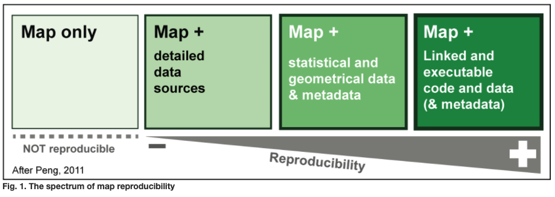

Reproducibility¶
As stated by Phil Hurvitz at the University of Washington: “Whereas desktop GIS packages are great applications for exploratory spatial data analysis and generation of map graphics, with typical work flows they are limited for scientific research. If you can’t remember, reproduce, or clearly communicate your methodology, then what you are doing cannot be technically called “research.”” See more in this presentation.
Fundamentally, the goal of transitioning to a code-based analysis workflow is to increase the reproducibility of your research results, which is increasingly required by publishers and just good practice in the scientific realm.
A huge advantage for learning programming is that you have your entire workflow recorded in a central document - a document that can be re-run at will. The benefit of using code to explore and analyse your data is that the code itself helps to make your project reproducible - when stored alongside your data and publication, it is a handy way of openly sharing with other researchers and allowing the potential of reproducibility (a fundamental tenet of not just open science, but all science).
The image below shows a spectrum of reproducibility based on the contents of research outputs.
 Image source: Girard & Lambert 2015
Organising your projects¶
Best practices and recommendations from coderefinery.org
Directory structure for projects¶
A good starting point is to keep all files associated with a project in a single folder
Different projects should have separate folders
Use a consistent and informative directory structure
If you need to separate public/private/secret, separate these by folder (and Git repo)
Add a README file to describe the project and instructions on reproducing the results
Talk to others in the project about what you do and write it down
An example of a research project folder may look something like this (keep in mind it’s not a one-size-fits-all):

Tracking source code, data, and results¶
All code is version controlled and goes in the src/ or source/ directory
Include appropriate LICENSE file and information on software requirements
You can also version control data files or input files under data/
If data files are too large (or sensitive) to track, untrack them using .gitignore
Intermediate files from the analysis are kept in processed_data/
Git can be used to collaborate on manuscripts written in, e.g., LaTeX and other text-based formats but other tools exist:
Overleaf (has TU Delft professional account and Git integration)
Authorea (apparently also has Git integration)
Google Docs can be a good alternative
Many tools exist to assist in making scholarly output reproducible:
rrtools: Instructions, templates, and functions for making a basic compendium suitable for writing a reproducible journal article or report with R.
Jupyter Notebooks: Web-based interactive computational environment for creating notebook documents. Can be used for supplementary material with journal articles.
Binder: Make a repository with Jupyter notebooks available in an executable environment.
“Research compendia”: A set of good practices for reproducible data analysis in R, but much is transferable to other languages.